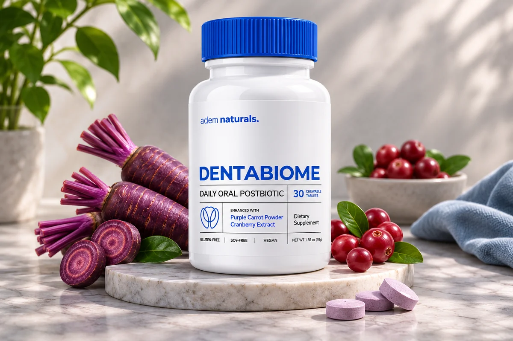

How DentaBiome Works
One Berry Frost tablet dissolves in your mouth once a day, delivering postbiotics, xylitol and plant extracts right where your oral routine happens.

How DentaBiome Is Designed to Work
There's no mystery formula, just a sensible format and well-known oral care ingredients. Here's the sequence the seller describes.
1. It dissolves where it's needed
The chewable breaks down in your mouth, so the formula is in contact with teeth, gums and tongue before you swallow. A capsule skips the mouth entirely.
2. Postbiotics support balance
The Lactobacillus components (L. plantarum complex, L. salivarius, L. rhamnosus) are positioned to support a healthy balance of oral bacteria.*
3. Xylitol keeps it sugar-free
Xylitol sweetens the tablet without table sugar. Government dental researchers note that xylitol-containing sugarless gums and candies may help prevent cavities.
4. Freshness and plant extras
The BioFresh™ Clean Complex is linked to the fresh-mouth feel, and purple carrot and cranberry add naturally occurring plant compounds.
*These statements have not been evaluated by the FDA. Research on individual ingredients does not prove the finished product works.
How to Take DentaBiome
- Take one Berry Frost chewable per day. Many people pair it with brushing in the morning or before bed.
- Chew it thoroughly, or let it dissolve slowly in your mouth.
- Don't double servings. One per day is the listed serving.
- Store it as the package directs, out of reach of children and pets (it contains xylitol).
- Follow your bottle's label, which always takes priority over any website.
Where It Fits in Your Routine
Brush & chew
Brush for two minutes, then enjoy your DentaBiome chewable.
Hydrate
Sip water through the day to keep saliva flowing.
Floss & brush
Clean between your teeth, then brush before bed.
Checkups
Keep up with your regular dental cleanings and exams.
Want more detail on each area? Explore the four focus areas or read why the chewable format matters.
Scientific References & Ingredient Research
Explore government health resources and published research related to the ingredients and topics discussed on this website.
Periodontal (Gum) Disease
Related ingredient/topic: Gum health context for the Lactobacillus postbiotic blendExplains how plaque bacteria can inflame gum and bone tissue, the warning signs, risk factors such as tobacco, and how dentists diagnose and treat gum disease.
View Official Research → NIH – National Institute of Dental and Craniofacial ResearchUS Government Health ResourceTooth Decay
Related ingredient/topic: Xylitol, oral bacteria and enamelDescribes how mouth bacteria produce acids that wear down enamel, plus causes, symptoms, treatment and prevention of cavities.
View Official Research → NIH – National Institute of Dental and Craniofacial ResearchUS Government Health ResourceDry Mouth
Related ingredient/topic: Xylitol and salivaCovers the role of saliva in rinsing teeth and keeping them strong, and notes that some sugarless gums and candies containing xylitol may help prevent cavities.
View Official Research → NIH – National Center for Complementary and Integrative HealthNIH Research SummaryCranberry: Usefulness and Safety
Related ingredient/topic: Cranberry extractSummarizes what research does and does not show about cranberry products, along with safety information and other names for the fruit.
View Official Research → NIH – Office of Dietary SupplementsNIH Fact SheetProbiotics – Consumer Fact Sheet
Related ingredient/topic: L. plantarum, L. salivarius, L. rhamnosusExplains what probiotic microorganisms such as Lactobacillus are, what research says about their effects, who should be cautious, and how to choose a product.
View Official Research → NIH – National Center for Complementary and Integrative HealthNIH Research SummaryProbiotics: Usefulness and Safety
Related ingredient/topic: Lactobacillus strainsReviews how probiotics are regulated in the US and notes that research on many uses is mixed or inconclusive, with safety considerations for vulnerable groups.
View Official Research → U.S. Food and Drug AdministrationFDA Consumer Safety GuidancePaws Off Xylitol; It's Dangerous for Dogs
Related ingredient/topic: Xylitol (safe storage)Warns that xylitol, found in sugar-free gum and some oral care products, can be dangerous for dogs and should be kept out of their reach.
View Official Research → MedlinePlus – U.S. National Library of MedicineGovernment Medical EncyclopediaBreath Odor
Related ingredient/topic: Fresh-breath positioning (BioFresh Clean Complex)Explains that bad breath most often comes from oral hygiene, and can also be linked to foods, medications and some health conditions.
View Official Research → Centers for Disease Control and PreventionUS Government Health ResourceAbout Oral Health
Related ingredient/topic: Daily oral care routineOutlines why oral health matters for eating, speaking and overall wellbeing, and notes that cavities and gum disease are largely preventable.
View Official Research → U.S. Food and Drug AdministrationFDA GuidanceDietary Supplements
Related ingredient/topic: Supplement regulation (all ingredients)Describes how the FDA oversees dietary supplements and that manufacturers are responsible for safety and labeling before products are sold.
View Official Research →These references are provided for educational purposes only. They do not represent an endorsement or approval of this product by any government agency. Research on individual ingredients does not necessarily establish the effectiveness of the finished product.
Ready to add DentaBiome to your daily routine?
Pick the package that fits you, then complete your order on the seller's secure checkout. Every package is covered by the 60-day money-back guarantee.